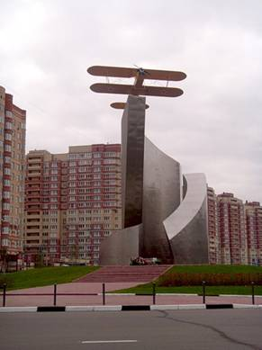
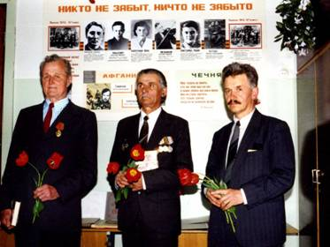
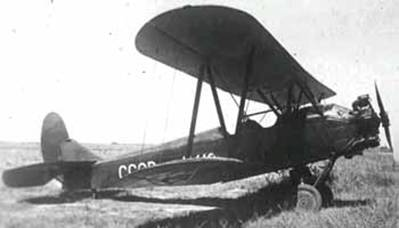
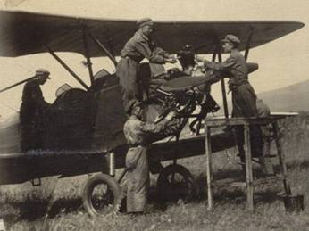
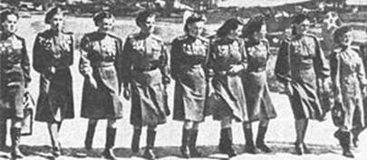
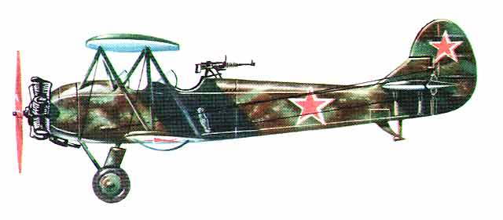

Послесловие
После гибели Лидии Свистуновой её классная руководительница София Ниловна Волкова организовала в школе музей, посвящённый своей бывшей ученице. Мама Лиды Анна Григорьевна передала туда все оставшиеся личные вещи и много писем с фронта. Но так как здание школы № 8, где училась Лида (около вагонзавода) было разрушено во время оккупации города немцами, то занятия после освобождения города возобновились в другом здании за Тверцой там, где потом была школа № 3. Именно там и был создан музей. Но после смерти Софьи Ниловны все материалы экспозиции были утеряны.
 Младшая сестра Инна Свистунова окончила школу, затем пединститут и стала учительницей. Выйдя замуж за военнослужащего уехала вместе с мужем, куда его направили служить. Так она «путешествовала» но всей стране – жизнь у военных, как известно. Постоянно была «на чемоданах». Наконец, она обосновалась на Украине, родине своей матери. В настоящее время живет в Киеве с сыном Александром, до сих пор ведёт переписку с однополчанами Лиды, а также с многочисленными музеями (в основном школьными), созданными в городах и станицах, где проходил боевой путь авиаполка. В 1997 году ей удалось отпечатать в Киеве на русском языке книгу «Верность», где размещены рассказы об однополчанах Лиды, о женском авиаполке, биография сестры, о семье и другие сведения, часть из которых приводятся в данном очерке.
А в современной Твери кто помит о героической землячке? Память о ней хранят немногочисленные внуки и правнуки брата её бабушки Арсения Алексеевича Волкова. Одни из них Аскольд Львович Власов (Волков по матери) переписывается с Инной Александровной Кутуевой, встречается с учащимися тверской СШ № 21 (бывший № 8), где училась Лидия Александровна. Он передал в школьный музей материалы о Л. Свистуновой и её боевых подругах. Десять лет назад, в 2000 году, на Памятник в Зеленограде
встрече с довоенными выпускниками школы нашлись несколько человек, помнивших Лиду – школьницу. Правда, из её класса к тому времени уже не было в живых никого.
Нынешние учащиеся СШ № 21 ежедневно видят Лиду Свистунову – она улыбается с портрета на стенде «Никто не забыт, ничто не забыто» - и вспоминают её имя во время праздников День Победы, День освобождения нашего города, пишут рефераты по книге И. А. Кутуевой «Верность».
27 января 2000 года в день юбилея Л. А. Свистуновой в тверской областной библиотеке им. А. М. Горького состоялся памятный вечер и презентация книги «Верность». В интернете на сайте этой библиотеки есть сайт с информацией о Лидии Свистуновой. В тверских газетах «Вече Твери», «Караван», «Тверские ведомости» прошли публикации, посвящённые нашей героической землячке.
От авторов. Приносим благодарность А. Л. Власову за помощь в разработке материалов очерка, за правки и замечания по существу изложения.
Такое уникальное формирование как полностью женский авиаполк не осталось незамеченным в истории. Ещё в 1961 году Семён Аранович снял документальный фильм о лётчицах полка «1100 ночей».
В 1981 году в СССР был снят фильм: В небе «Ночные ведьмы», посвящённый истории полка.
В фильме” В бой идут одни «старики» “ в основу любовной линии сюжета была положена реальная история лётчицы 46-го полка Героя Советского Союза Надежды Поповой и лётчика 821-го истребительного полка Героя Советского Союза Семёна Харламова.
После окончания войны многими из девушек были написаны книги и мемуары о своём боевом пути.
СПРАВКА
У-2 — многоцелевой биплан, созданный под руководством Н. Н. Поликарпова в 1928 году.
У-2 разрабатывался для первоначального обучения лётчиков и обладал хорошими пилотажными качествами. Первый полёт был выполнен 7 января 1928 года под управлением М. М. Громова.
По схеме самолёт У-2 - типичный биплан с мотором воздушного охлаждения М-11 мощностью 100 л.с. Этот самолёт имел широкий спектр применения в сельском хозяйстве, связи и других областях. Существовали штабные и санитарные, предназначенные для аэрофотосъёмки, пассажирские, поплавковые и многие другие модификации.
В 1932 году был разработан учебно-боевой вариант У-2 (У-2ВС), который мог брать с собой 6 8-килограммовых бомб на держателях, а в задней кабине машины располагалась стрелковая точка с пулемётом ПВ-1.
С началом Великой Отечественной войны имевшиеся под рукой стандартные варианты У-2 стали переделывать в лёгкие ночные бомбардировщики. Доработка проводилась как в ОКБ Поликарпова, так и на серийных заводах и в действующей армии силами инженерно-технического состава строевых частей и авиаремонтных мастерских. Вследствие этого конструкция боевого У-2 имела большое количество различных вариантов. Бомбовая нагрузка варьировалась от 100 кг до 350 кг.
В 1943 году число полков, оснащённых У-2, достигло максимума — на фронте действовало до 70 авиаполков ночных бомбардировщиков и разведчиков. После смерти Н. Н. Поликарпова в 1944 году самолёт в честь его создателя переименовали в По-2. У-2 строился серийно до 1953 года, было построено 33000 машин.
У-2 широко применялись для т. н. «беспокоящих налётов» по ночам на прифронтовые расположения войск противника. Несмотря на небольшую бомбовую нагрузку, подобные бомбардировки имели определённый эффект. С малой высоты бомбометание производилось с очень высокой точностью, несмотря даже на тёмное время суток и примитивные средства прицеливания. После сброса бомб бомбардировщик пытался быстро уйти, набирая максимальную скорость . По воспоминаниям советских пилотов, летавших на У-2, после заводской доработки самолёта в 1942-м году бомбовая нагрузка была существенно увеличена — до 250 кг (в отдельных случаях — до 500 кг), вылеты производились иногда до шести-семи раз за ночь. «Рус фанэр» — так солдаты вермахта прозвали У-2, доставляли массу хлопот для противника в прифронтовой полосе.
Самолёты У-2 использовались также для прыжков с парашютом, например, на тренировках.
Осенью 1941 в ВВС СССР было начато формирование авиационных частей, укомплектованных женщинами. Один из женских авиаполков имел на вооружении самолеты У-2: 46-й («Таманский») гвардейский ночной бомбардировочный авиаполк. По бытующей легенде, лётчиц 46-го гвардейского полка солдаты противника называли «ночными ведьмами». По другой версии, это прозвище было дано им французскими пилотами полка «Нормандия-Неман» как комплимент. 23 лётчицам, воевавшим на У-2, было присвоено звание Герой Советского Союза. Двум лётчицам — звание Герой России.
Полк был сформирован в октябре 1941 по приказу НКО СССР № 0099 от 08.10.41 «О сформировании женских авиационных полков ВВС Красной Армии». Руководила формированием Марина Раскова. Обучение проводилось в городе Энгельс. Полк отличался от прочих воинских формирований тем, что был полностью женским. Созданные согласно тому же приказу два других женских авиаполка в ходе войны стали смешанными, но 588-й авиаполк до своего расформирования остался полностью женским: только женщины занимали все должности в полку от механиков и техников до штурманов и пилотов.
23 мая 1942 года полк вылетел на фронт, куда и прибыл 27 мая. Тогда его численность составляла 115 человек — большинство в возрасте от 17 до 22 лет. Полк вошёл в состав 218-й ночной бомбардировочной авиадивизии. Первый боевой вылет состоялся 12 июня 1942 года.
Приказом НКО СССР № 64 от 8 февраля 1943 года полк был преобразован в 46 гвардейский ночной бомбардировочной авиаполк.
С 15 мая 1944 года входил в состав 325-й ночной бомбардировочной авиадивизии.
В ходе освобождения Крыма в мае 1944 года полк временно входил в состав 2-й гвардейской ночной бомбардировочной авиадивизии.
За бесстрашие и мастерство немцы прозвали лётчиц полка «ночными ведьмами».
15 октября 1945 года полк был расформирован, а большинство лётчиц демобилизовано.
Приложение.
О самолёте, на котором воевали лётчицы 46 – го авиаполка.

В 1926 году Управление ВВС СССР объявило конкурс на создание учебного самолёта, с помощью которого планировалось обучение лётного персонала будущей мощной авиации. В конкурсе победил проект конструктора Николая Николаевича Поликарпова (1882 – 1944 гг.). В первые в воздух поднял эту машину наш земляк Михаил Громов, будущий прославленный авиатор СССР. Произошло это 7 января 1928 года. Специалисты давали такой отзыв: «Биплан отличался редкой «летучестью», был устойчив и удивительно снисходителен: он прощал ученику даже грубые ошибки. Роковой штопор, стоивший жизни многим первоклассным лётчикам, превратился для У – 2 в заурядную фигуру пилотажа».
Во время войны основным предназначением У – 2 считалась связь, его так и называли – самолёт связи. Партизанам он доставлял боеприпасы, продовольствие, медикаменты, связников, осуществлял связь между воинским соединениями, сбрасывал десантников, выводил на Большую землю раненых, корректировал ночью арт. огонь, наконец, сбрасывал бомбы, как в 46 – м полку, на голову врага.
Машина могла нести бомбы малого калибра от 20 кг до 50 кг, точность их попадания при малой скорости полёта или планирования компенсировалась их малой мощностью. Самолёт мог взлетать или приземляться на площадках небольшого размера с простейшим устройством полосы разбега, длиной 100 метров, а то и вовсе без всех приспособлений, прямо с естественной поверхности летом на колесах или зимой на лыжах.
Немецкие зенитки, как ни кажется это странным, оказались малоэффективными в борьбе с У – 2: по тихоходному биплану стрелять сложнее, чем по скоростной цели. А ночью попасть в У – 2 было ещё сложнее.
.
Во время войны самолёт назывался По – 2 («Поликарпов – 2»), прославив своего создателя наверное более, чем его истребители И – 15, И – 153, И – 16. Закончил свою службу По – 2 в 1959 году – его сняли с производства. Служба была безупречной, превратившейся в легенду советского самолётостроения, выпустившей несколько тысяч таких машин (около 33 тысяч) различных модификации.
Основные тактико – технические характеристики По – 2 таковы: размах крыла 11,4 м, площадь крыла 33, 15 кв. м., длина самолёта 8,17 м., взлётный вес 940 кг (легче современного легкового автомобиля), двигатель М – 11 мощностью 100 л. с., максимальная скорость 155 км/ час, посадочная скорость 70 км/ час, максимальная дальность полёта 400 км, потолок 3 000 м, вооружение – 1 пулемёт, около 300 кг бомб. Конструкция: каркас из сосновых реек, расчаленный проволокой и обтянутый полотном; большое оперение, способствующее эффективному выходу из штопора; количество мест – два, ведь это был учебный самолётик. На международных авиационных выставках 1930 и 1936 годов отмечался призами.
Литература:
- И. А. Кутуева. Верность. – Киев, 1997 г.
- И. А. Кутуева. Прекрасный свет жизни. – К.: 2008 г.
- Кравцова Н. Ф. От заката до рассвета. Повесть. Переиздание. М., «Дет. Лит.», 1974 г.
- Чечнева М. П. Боевые подруги мои». – М., 1975 г.
- А. С. Яковлев. 50 лет советского самолётостроения. М., «Наука», 1968 г.
- Оружие Победы, 1941 – 1945 гг. Сборник, М., Молодая Гвардия, 1975 г.
- Кубарев В. Н. Авиация – моя жизнь! Мемуары лётчика – истребителя эпохи Великой Отечественной. – 2 – е изд., испр. и доп. – СПб.: Издательство ДЕАН, 2009 г.
- Шарков Ю.А. Имя твоё известно – подвиг твой забыт ,,Вече Твери.- 1998-16 апр.
<<< Предыдущая страница |